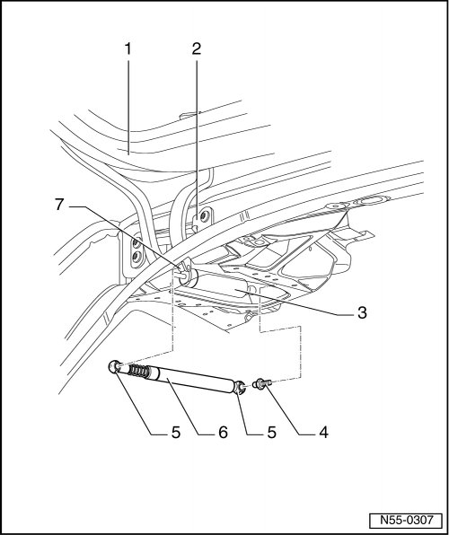

Gas-Filled Strut For Hinged Window
Rear Lid
Gas-filled Strut for Hinged Window
Removing

- Remove headliner..
- Gas-filled strut cover, through 10.2006, removing, refer to --> [ Gas-filled Strut Cover, through 10.2006 ] Gas-Filled Strut Cover, Through 10.2006
- Remove the gas-filled strut cover, from 11.2006, refer to --> [ Gas-filled Strut Cover, from 11.2006 ] Gas-Filled Strut Cover, From 11.2006
- Reach under spring clips - 5 - using a small screwdriver.
- Lift the spring clips - 5 - just far enough so it is possible to slide them over the ball socket.
- Remove gas-filled strut - 6 - from the ball studs - 4 - and - 7 -.
After removing gas-filled strut - 5 -, immediately slide spring clips - 4 - back on again.
CAUTION!
Proceed carefully when re-using gas-filled strut. Spring clips must not be pried completely out of ball socket, otherwise spring clips will be damaged. Gas-filled strut springs out of mount and leads to damage and injury to the operator.
Installation
- Place the gas-filled strut - 6 - on the ball studs - 4 - and - 6 -, and press on it until securing clips - 5 - engage.
Further installation is in reverse order of removal.